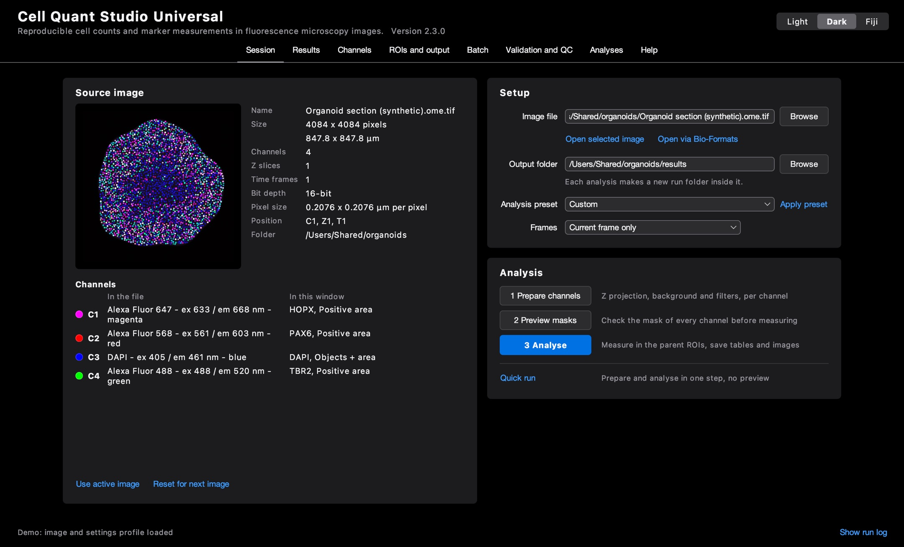
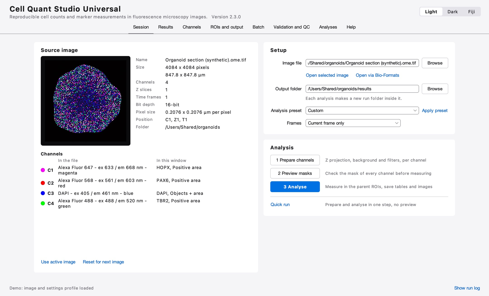
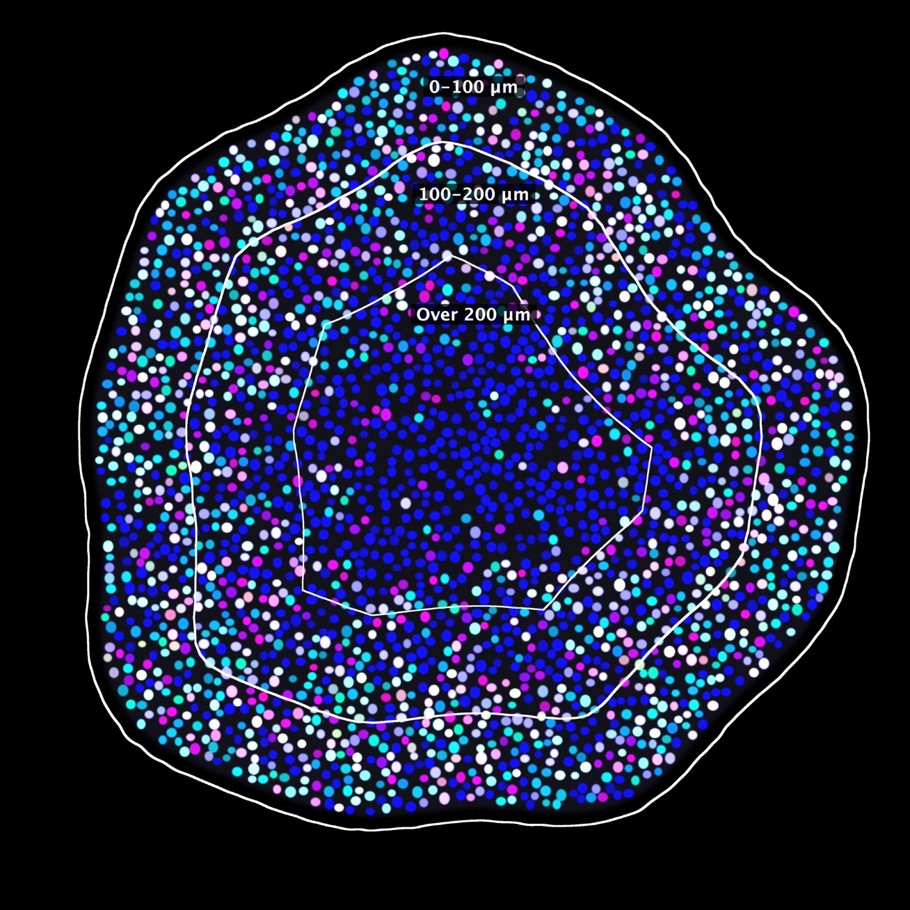
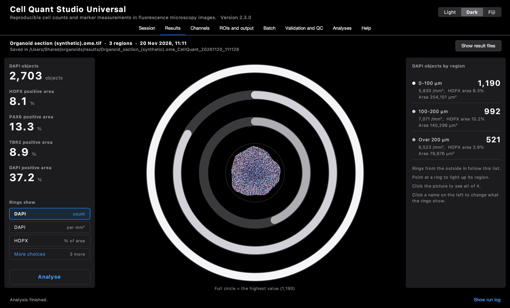
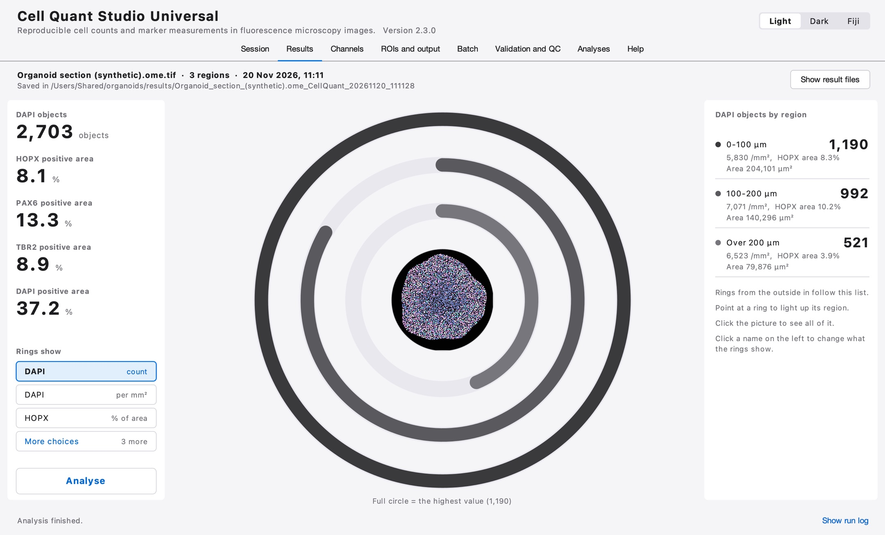
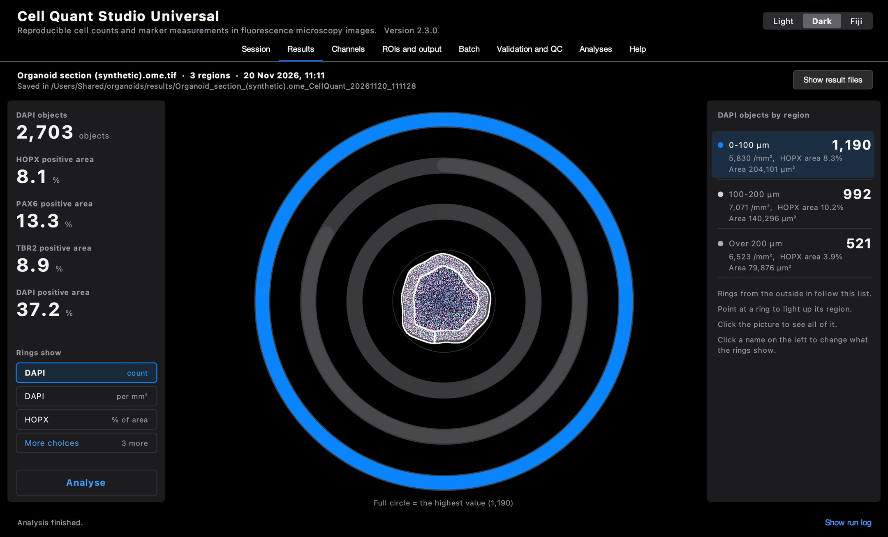
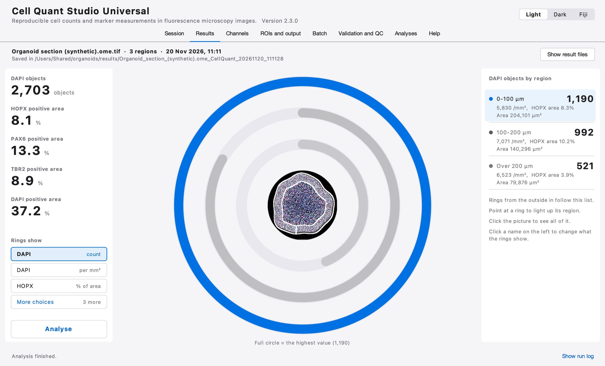
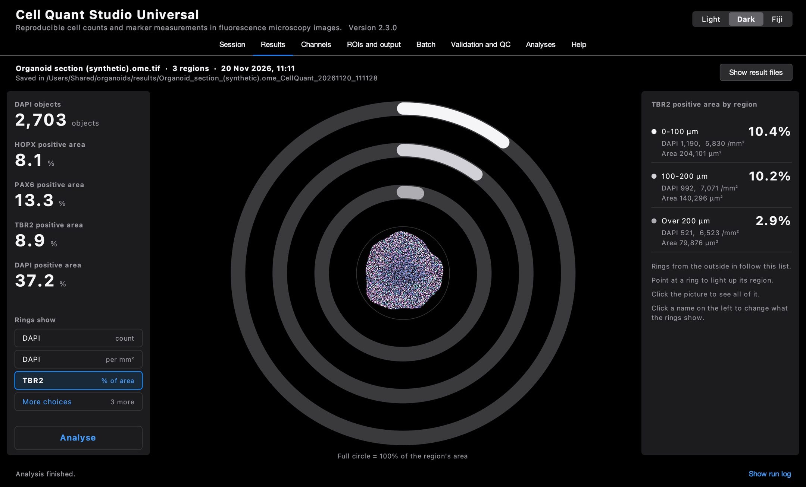
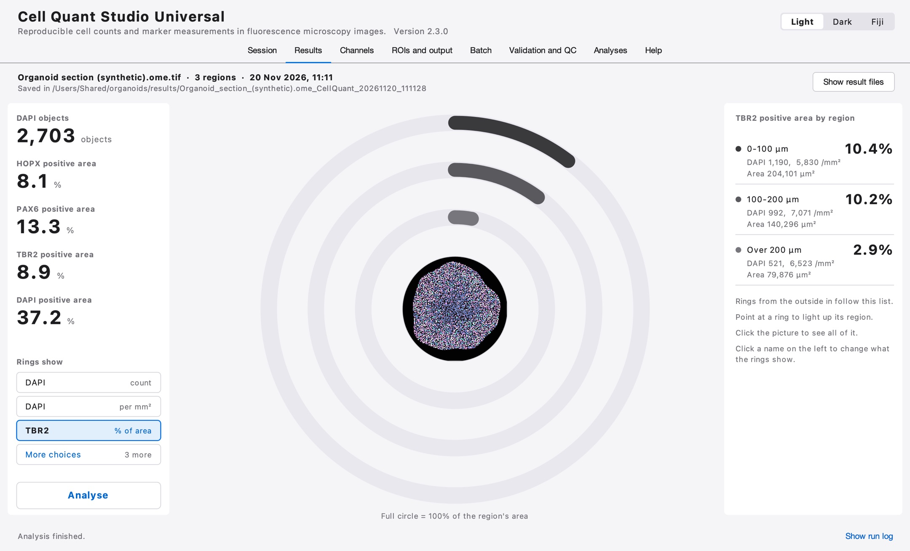
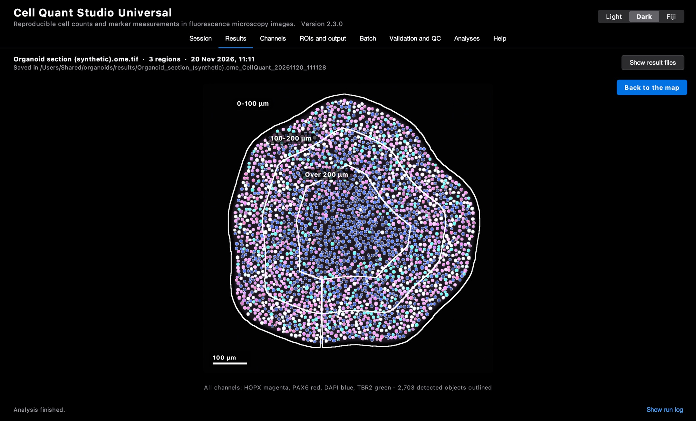

Free and open source / for Fiji and ImageJ
Count every cell. The same way, every time.
Cell Quant Studio turns a fluorescence microscope image into numbers you can defend: how many cells, how much of the tissue is marker-positive, and where. No code to write.
Runs inside Fiji on Windows, macOS and Linux.
Nuclei by depth from the surface, in the demo run below.
How it works
From image to answer in three steps
Counting cells by hand takes hours, and two people rarely get the same number. Cell Quant Studio does it in seconds, the same way each time.
Open an image
Drop a microscopy file into the window. Each channel is one stain: DAPI marks every nucleus, MAP2 marks neurons.
Choose what to measure
Pick a preset, or set each channel to count objects, measure stained area, or both. Draw the regions you care about.
Press Analyse
Every cell is found and outlined. You get counts, areas, a picture to check by eye, and tables for your statistics.
The one-minute demo
Watch it run, start to finish
Six steps, recorded from the real window. In Fiji they run by themselves with one click. Press play, or pick a step.










Open the image. The app reads the microscope file: its size in micrometres and every channel with its wavelength. A channel called DAPI that is not on the 405 nm laser would be flagged.
Find the tissue. It outlines the organoid and divides it into three zones by depth from the surface: 0–100 µm, 100–200 µm and deeper.
Analyse. One click. Every nucleus is counted and four channels are measured in each zone. Every setting is saved next to the numbers.
Point at a zone. Each ring is one zone. Point at a ring, and its row and its outline on the picture light up with it.
Switch the marker. Choose another stain and the rings redraw. Here the marker is strong near the surface and fades toward the core.
Check the picture. Every counted nucleus is outlined on the image, so a count can be checked by eye, not just trusted.
Recorded on a synthetic test image built to look like an organoid section, with the demo's own settings. It is not real tissue, and its numbers say nothing about biology.
What it does
Built for real tissue, not tidy examples
Sections are uneven, nuclei touch, and one experiment is hundreds of images. This is what the app does about it.
Counts cells
Separates touching nuclei, filters by size and shape, and counts only what lies inside the true outline of your region.
Measures markers
How much of the tissue is positive for a stain, and how bright it is, per channel and per region.
Whole folders at once
Apply one saved profile to every image in a folder, from the window or from a script on a server.
Depth profiles
For organoids: how cell density and marker coverage change from the surface to the core.
Repeatable
Every setting is saved with every run, so an analysis can be repeated exactly, by you or by a reviewer.
Fast on big images
The slowest enhancement step runs on all processor cores, with pixel-identical results.
Trust, but verify
It checks its own work
A count is only useful if you know how wrong it might be. The tools to find out are built in.
- Against a human
- Click on cells yourself and get precision, recall and F1 for the automatic count.
- Against a reference mask
- Overlap scores for stained areas.
- Sensitivity
- See how far a result moves when one setting changes.
- Robustness
- Check whether a difference between groups survives every defensible choice of settings.
Get started
Install in two minutes
- Install Fiji if you do not have it.
- Download the files from GitHub and copy them into
Fiji.app/plugins/Scripts/Cell Quant Studio/. - In Fiji, run
Cell_Quant_Studio_final.py.
Free to use, study and change under the GNU General Public License, version 3 or later.